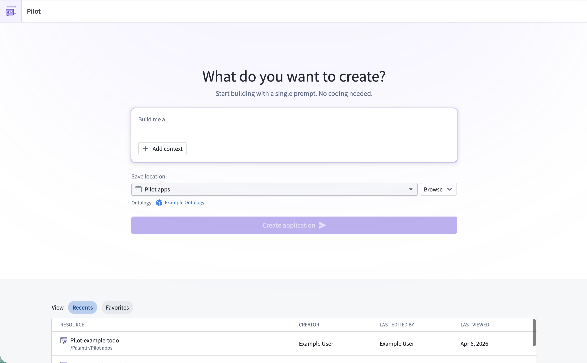

This page walks you through creating your first application with Pilot. By the end of this guide, you will have a working application with generated ontology entities, a design specification, frontend code, and seed data running in a live preview.
To open Pilot, select Pilot from the application menu in the Foundry navigation sidebar. If you do not see Pilot in the application menu, confirm that your enrollment has Pilot enabled and that you have access to a project with ontology write permissions.
The Pilot welcome screen displays a prompt input, a Save location selector, and a list of recent applications.

Build a task management application for tracking team projects with priorities and deadlines.Pilot creates an isolated container where all code and ontology edits are safely made until you deploy the application explicitly.
:::callout{theme="neutral"} To build a custom widget instead of an application, select Custom widget set on the welcome screen. The build workflow is the same; see Build a custom widget. :::
After you select Create application, Pilot provisions a container for your application. This process may take a few moments. You can monitor progress using the status indicator in the top-right corner of the workspace. For more details on status monitoring, see The Pilot workspace.
Once the container is ready, the Pilot workspace will open. The workspace has two main areas:
For a detailed walkthrough of each workspace area, see The Pilot workspace.
After Pilot finishes the initial build, you can continue iterating by typing follow-up prompts in the chat panel. For example:
Add a dashboard that shows project completion statisticsUse a dark color scheme with blue accentsAdd a priority field to the task object type with values High, Medium, and LowPilot processes your request and updates the relevant parts of the application. Changes appear in the live preview as soon as the agent finishes.